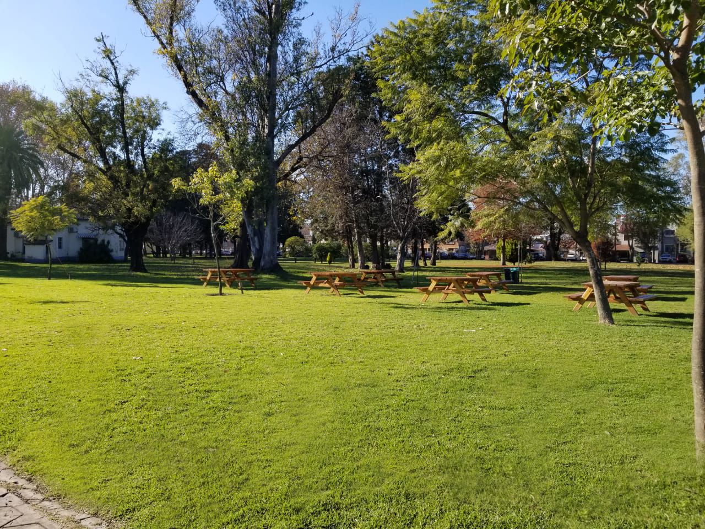
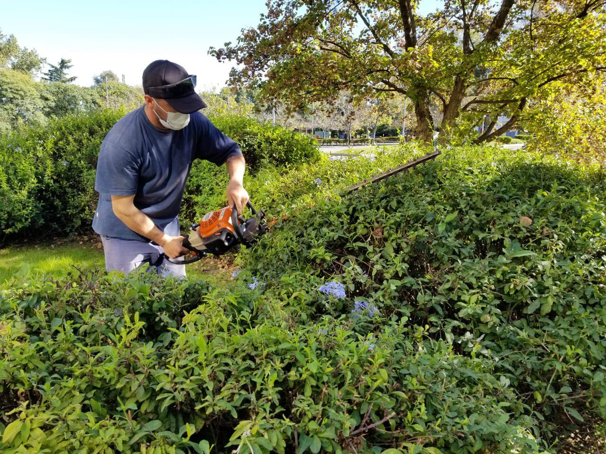
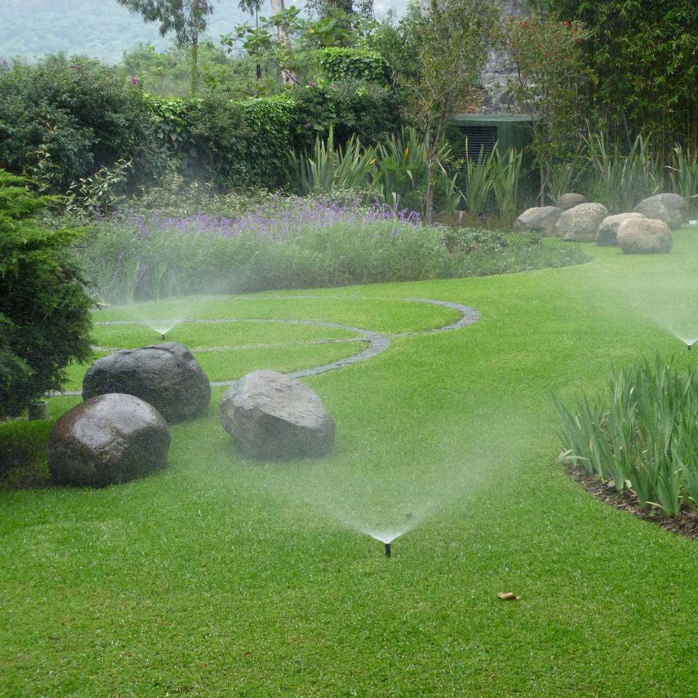
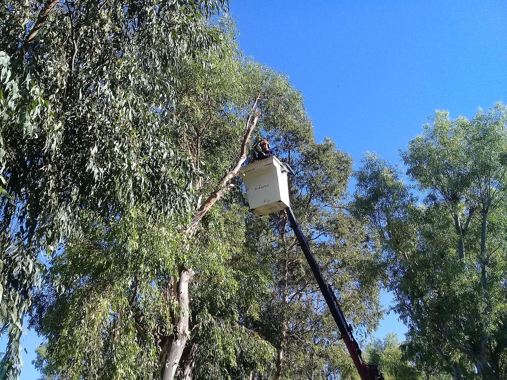

Parquización
Paisajismo
Limpieza
Riego
Poda
Parquización
Trabajamos con panes y semillas de primera calidad para brindar una mejor germinación o adaptación al suelo. Para ello, analizamos previamente el suelo. En base a esto, determinamos las especies de céspedes aptas para cada sector.
Paisajismo
Realizamos plantaciones, podas, jardinería express, instalación de riegos y diseños de áreas verdes con canteros integrados. Los canteros pueden ser muy variados, con diversas tonalidades de follajes, variedad de flores, entre otras alternativas.

Limpieza
Diseñamos un servicio integral, pensado y desarrollado por expertos en limpieza y mantenimiento de espacios verdes. Abarca una gestión responsable de tareas a desarrollar de acuerdo con las características y necesidades de cada empresa, garantizando un manejo responsable de los residuos.
Riego
Instalamos un sistema de riego automático y semiautomático. Mediante estos sistemas, se puede programar para iniciar el riego cuando lo requiera, la cantidad de tiempo y las veces que lo desee. En el caso de realizar un diseño de parquización con nosottros, efectuamos una instalación de riego acorde al diseño solicitado.
Poda
Realizamos podas de formación, de seguridad, de limpieza, entre otras. A partir de esto, seleccionamos las herramientas que debemos utilizar. En podas de seguridad, dependiendo de la altura de la especie, determinamos si es una poda a 2 o más metros de altura para definir el uso de una hidrogrua en caso de ser necesario. En cuanto a los residuos generados, nos hacemos cargo de su retiro y disposición final.
